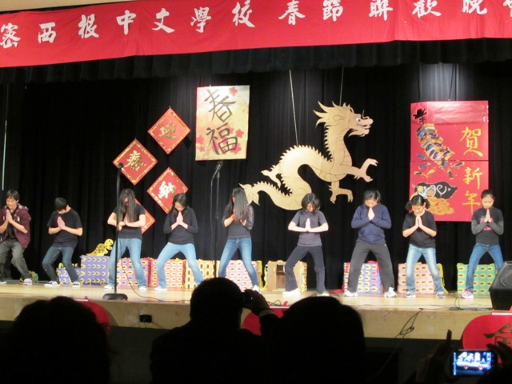
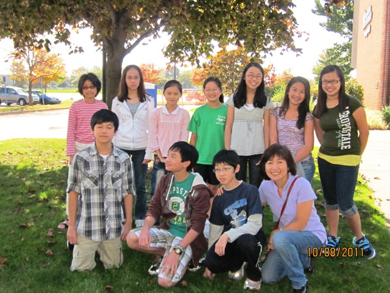
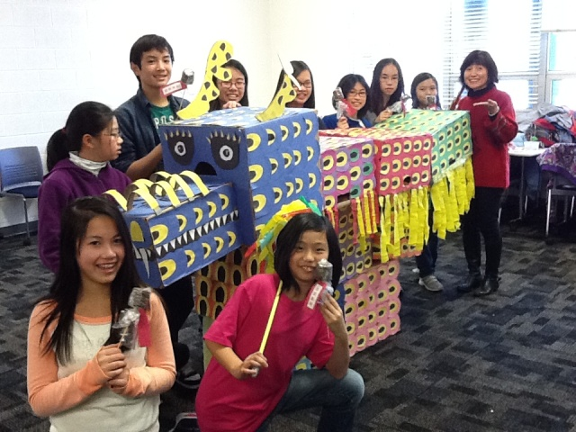

|
密西根中文學校 Michigan Chinese School
四年級班
Fourth Grade Class

四年級老師—楊維琍
今年已是我第十二年在密西根中文學校教中文了， 由於大學時代我主修語文，所以對語言文字學習的領域，特別感興趣。
我在本校教過一、三、四、五、七及八年級，很清楚的知道各年齡
層學生的認知能力、潛在能力、以及如何引發其學習動機。我認為每個孩子在學習上均不該被忽視。我也很重視與學生及家長間之互動，希望每個孩子都對中文學習
興趣盎然，且自覺身負使命感。
目前我對於四年級的教學方向，首以台灣僑教委員會提供之課本為主要教材。並運用5C教學原則生動課堂活動。
1.
溝通
2.
文化
3.
連貫
4.
比較
5.
社區
我也主張順應當下所需， 幫助同學“認繁識簡”，與“漢語拼音”。略做說明如下：
“認繁識簡”—傳統中文當然不可取代，但同學也需曉得另有以簡體 中文字型的書寫方式。
“漢語拼音”—中高年級以上同學在具備ㄅ、ㄆ、ㄇ、ㄈ…注音基礎 下，建立其漢語拼音能力，以利日後電腦輸入之便。
"善用字詞典"__ 培養中年級的同學多利用字典,
幫助學生達到閱讀
與寫作業的獨立性。
長久以來,本人秉持著“教學相長”的理念，鞭策自己在中文教育的崗位上盡己所能克守職責。
This
is my twelfth year teaching Chinese at Michigan
Chinese
School
(MCS). I have
always been interested in linguistic studies since majoring in
Language. At
MCS, I have had the opportunity to teach first, third, fourth, fifth,
and
eighth grade, and have experienced first-hand learning needs,
capabilities, and
potentials of children from all ages. I enjoy working collaboratively
with
students and their parents in motivating each of them in the studies of
the
Chinese language.
Currently, my teaching models for eighth grade Chinese is based on
textbooks
published by the Taiwanese government (O.C.A.C) utilizing the 5 C’s:
1. Communication,
2. Culture,
3, Connections,
4. Comparison, and
5. Community.
Besides irreplaceable beautiful traditional Chinese characters, I will
introduce some simplified Chinese characters for students.
In addition, I encourage students to learn Chinese hanyu pining after
they are
already familiar with the Chinese phonetics of ㄅ,
ㄆ,
ㄇ,
ㄈ….,
so they can learn
computer input more easily.
I strongly feel that students and teachers can learn from each other
continuously and mutually benefit. This belief has guided me in
developing my
teaching methods and led me to overcome challenges in my Chinese
teaching
endeavors.
Thank you!



|